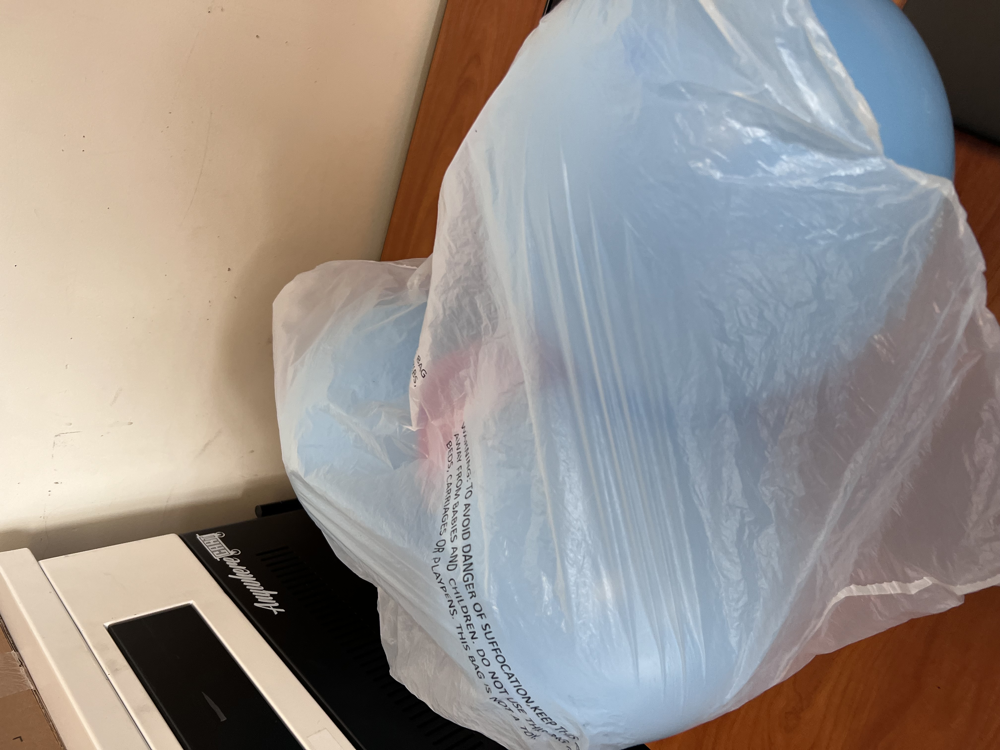

Today i figured out how to code kinda 8/22/22
9/2/22 This week i firgured out how to use tinkercad which is a wbesite that allows you to do 3d designing which is pretty cool. Also yesterday we had a challeg day which is the best day in this class becuase every thrusday we do something fun druing that day.We had to desgin a house hold item like a toster or oven. Also we learn about the rube goldberg.


9/8/22 The first day back from our three week break we just worked on our goldburg machine. The next day i was able to finish and my teacher Mr Poole has put us in groups which was to exicting but it was fine. On thursady we had a sub so far he was old and not as good at controling classes but he was fine and it was very chaotic so far and it was not to good so far.
9/16/22 This week we we mostly contiuned on building our rub goldburg machine and we did this for 3 of the days. On thursday we had a challenge day and we had to build paper boats that day and had to compete with them and my teams boat floated for the whole 5 minutes. For next week I hope my team and i finish our rug goldbrug machines and it works.
9/19/22 This week we worked on our Rube goldburge machines and my gorup and I made a lot of progress this week and we were able to finsih on tuesday and for wensday my group help out many other groups and just chilled. For thursday it was challenge day and the groups the didn't finish stayed and contiuned to work on their projects and since my group finished we were able to wonder the school and count the toliets. Also on friday we did the compitions for our rube goldberg machines.
9/30/22 This week we didn't have Mrs Poole this week since he got covid but it was fine with all the subs and stuff we did. This week we didn't have no challenge day which sucked but we were able to use tinkercad to make a prosthic leg for an animal which was cool and also today i learned how to embed a video into this website and i put a whole ad.
10/7/22 This week we dissecting computers and me and my partner Christian we were able to finish dissecting on the first day and it was enjoyable to see the inside of computer. On The second day of dissecting the computer my partner and i were able to label and finish the work. Also we were abel to finish closing the computer. Next week I hope we get to do something that is in the lab and start building some stuff again becuae i reaally enjoyed doing stuff like that.

10/14/22 This week we learned about arospace engineering. Things i learned the four things about arospace.(Drag,weight,thurst,lift). This week we also were able to draw out and sketch our rocket for out project in this subject. After we finished sketching out our project we were able to design it in tinkercad.

10/24/22 Last week i worked on a rocket with the team i was on with Lyza, Daniel and myself. The rocket we built took around 3 days to build but on friday we were gonna launch our rocket but we had a small hole so it couldn't be shot up into the air, so Mr. Poole told us to use a new bottle and my team and I created and new rocket with a new bottle in around 30 mins which was pertty good.Next week i wanna do something just as fun as it was this week.

11/4/22 This week we learned about electrical engineering and is something we are going to learn for the next 2 weeks which seems fun. This will probably be fun because it can show us how things work. We also can finally work with electricity which can be fun. Next week i hope to start working on the real breadboard which will be fun.Also next week I hope to get a good parnter for the bread board and one that does stuff, but I also hope its someone I'm confortable with. Next week i know that we are going to code the bread broad i think but thats probably gonna be fun.


11/10/22 This week we used bread boards which was fun to use and I was able to learn a lot from using them. I was able to learn how to use a muiltimeter and i was able to learn how to use it. It was fun using them. But to turn them on i had to use my computers battery to use them.

12/2/22 This week we got put into groups to build a spaghetti bridge and I like the group I'm in because they are good. But we can only use 20 pieces of spaghetti and that makes it much harder and more difficult to build becuase we can only use a certin amount and not as much as we want. Also next week my group and i are going to start the foundation of the bridge.
1/16/23 The last time I updated was before winterbreak and we tested our spaghetti brigdes and it was a fun process of building it as i was able to build it with the people i like. I don't know how much my brigde held but i know it was more than it weighted. During winter break I really didn't do much except gaming for most of the time. I play on a ps4, and i played with friends for most of the time and i was really able to get a break from school which was good. Last week i learned alot about buisness, which could be really helpful towards the future. I learned about how to business work and how to gain money from it too. After that week we have to create a business presentation on why we should get money to sell a certin prodect of our choice, and we're in groups of 3 or 4 and i feel like my presentation isn't that good as my team says we are just going to talk for most of the time then letting our slides to do most of the work so, I'm not to confident in my slides.
1/19/20 This week we learned about business and we had to create a presentation and we had to think about what products we can create a presentation on so we can get some offers for our companies. The offer that my group got was not that good. I forgot what offer we got but it was not that god.
1/27/23 This week we learned about different viscosity and we went over a presentation on it. After we created oobleck the next day it was pretty easy and fun to create it but it was messy. I also learned that when oobleck is punch it acts like a solid but when you slower put you finger in it it feels like a liquid.


2/3/23 This week we tinker cadded our mouse trap car and it was going good. Tuesday we did the same thing but i was able to make the body and Niro almost finished the mouse trap for the car. On Wednesday i thought it was going to be a boring day, and i wasn't looking forward to math because I don't do anything in that class except copying notes, but after P.E, i went on to my fourth period. When i reach fourth period, it was going on as usual and then while in the middle of class we went into lock down. I soon find out that a guy came into the school to use the wifi. He left before school started and arrested at starbucks. And today(friday) he was arrested again for taking pictures of girls in a coffe shop. The sticky note challenge was on wednesday, i didn't take any pictures of the sticky notes.

3/24/2023 This week we worked on our egg drop contest and it was fun as we are going to test it next week.
3/31/2023 This week we tested the egg and it worked but we change the way it works kinda, because Niro Broke the one we were going to use but he throw it up and it broke the parachute. Becuase he broke it, it was able to work and it was more effective.

4/7/2023 This week i worked on the boat project and it was fun and I may have to finish it next week because im not sure if its down or not. I may have to work on it a little be more.
4/14/23 This week i was able to fully finish the cad and and i was able to start building the boat. The boat that I am building is going to look like a cardboard canoe but not as good. We are making the boat because we are trying we are going to row the boat on water and try to get as many laps as possible.
4/28/23 This week we did contiuned to build my boat with my group and we made a good amount of progress and we built the bottom of the boat but realies that it would be better to take it off and just layer the bottom of the boat with cardboard. It would be much more effective then what we were origanlly gonna do.Also we are just building the prototype and the real one is going to be built after.